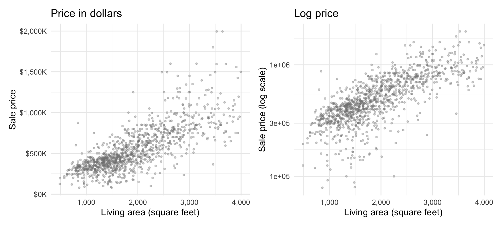
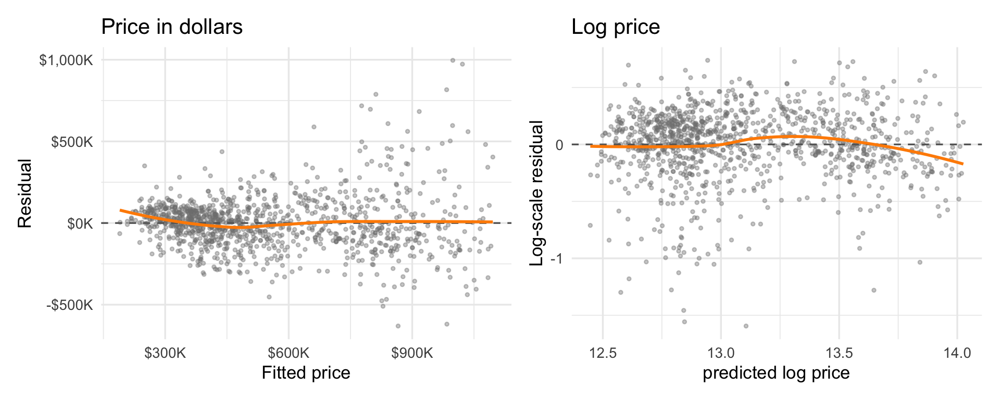
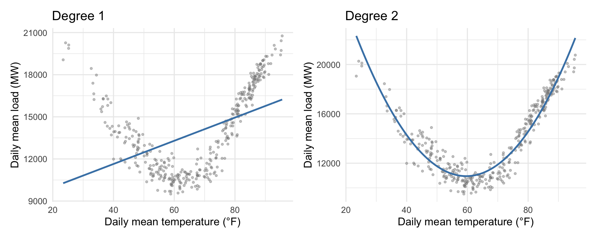
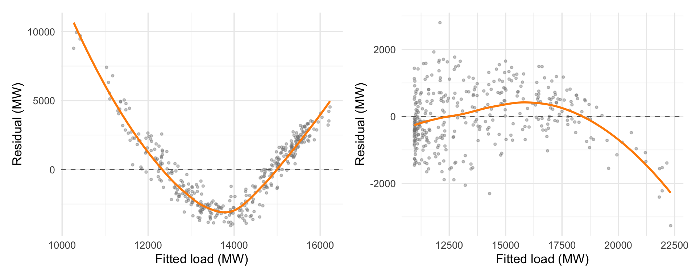
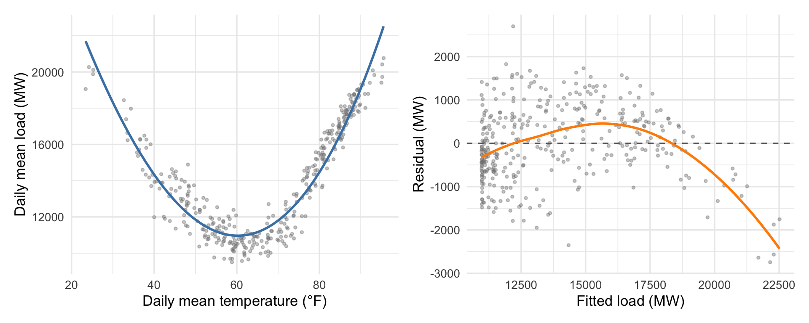
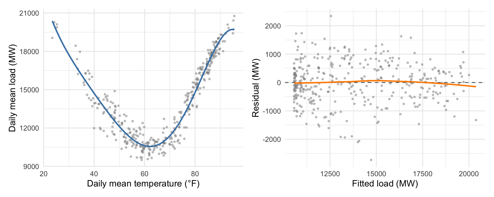
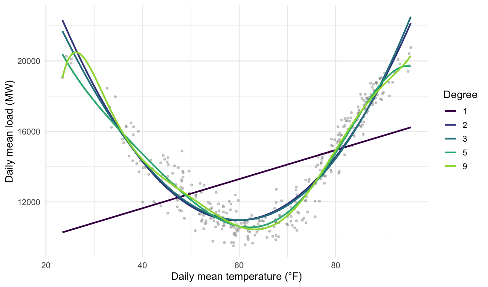
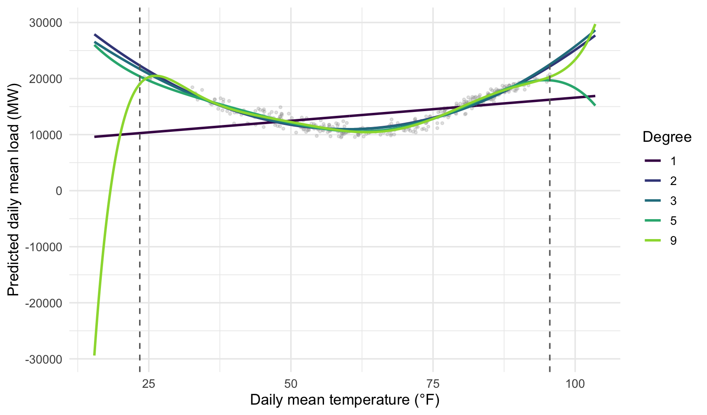

24 Modeling nonlinear relationships
Linear regression models can fit certain nonlinear relationships too. Interaction terms already made fitted relationships nonlinear in the predictors by including their products. Transforming covariates, responses, or both lets us represent other nonlinear relationships.
24.1 Log transformations in regression
When we checked diagnostics for the Austin housing data, the spread in our prediction errors grew with the fitted value. That pattern suggests trying a logarithmic scale for price. As we saw in Section 4.4, equal vertical distances on a log scale represent equal ratios rather than equal dollar differences.
Even without a fitted line, we can already see that the spread around the line of best fit will be more uniform on the right.
To get some practice with a multiple regression model, we again predict sale price from living area and ZIP code, with 78731 as the reference category:
\[ \widehat{\log(\text{price})} =\widehat\beta_0+\widehat\beta_1(\text{area}) +\widehat\beta_2D_{78721}+\widehat\beta_3D_{78723}. \]
Exponentiating the entire fitted equation returns the prediction to dollars and turns the additive components into multipliers:
\[ \begin{aligned} \widehat{\text{price}} &=\exp\!\left[ \widehat\beta_0+\widehat\beta_1(\text{area}) +\widehat\beta_2D_{78721}+\widehat\beta_3D_{78723} \right] \\ &=\exp(\widehat\beta_0) \exp\!\left[\widehat\beta_1(\text{area})\right] \exp(\widehat\beta_2D_{78721}) \exp(\widehat\beta_3D_{78723}). \end{aligned} \]
A linear regression model makes a prediction by summing up contributions from each term in the model. If we take a logarithm of \(Y\) before we fit the linear model, we get a model that makes a prediction by multiplying the contributions from each term.
Under normal log-scale errors — or, more generally, errors symmetric around zero — this exponentiated fitted value is the conditional median price.
24.1.1 Checking nonlinearity and equal variance assumptions
Before interpreting the coefficients, we check what the transformation does to the diagnostics. The linear model in Figure 24.2 (left panel) again shows a pronounced increase in residual spread as fitted price rises. After taking logs, the spread is much more consistent, although a hint of nonlinearity remains (it’s also visible in the log-price versus area scatterplot above as a leveling-off at higher prices).

The log transformation addresses the equal variance violation by changing what “equal variance” means. In the original model, equal variance asks for a similar distribution of errors in dollars for any combination of area and ZIP. In the log(latest_price) model, it asks for roughly constant multiplicative errors across fitted prices. For example, a $20K error is a 10% miss on a $200K house, the same percentage miss as $40K on a $400K house. In this model, we expect larger errors (in dollars) when we predict higher prices.
24.1.2 Interpreting the coefficients
The estimated coefficients are below:
\[ \widehat{\log(\text{price})} =12.66 +0.00034(\text{area}) -0.38D_{78721} -0.32D_{78723}. \]
Table 24.1 gives the complete regression table.
| Estimate | Std. error | 95% CI | t | p-value | |
|---|---|---|---|---|---|
| Intercept (78731, area = 0) | 12.65541 | 0.04522 | [12.56668, 12.74413] | 279.87 | <0.001 |
| Living area (sq ft) | 0.00034 | 0.00002 | [0.00031, 0.00038] | 20.72 | <0.001 |
| 78721 vs. 78731 | −0.37593 | 0.03343 | [−0.44152, −0.31033] | −11.25 | <0.001 |
| 78723 vs. 78731 | −0.32155 | 0.02566 | [−0.37190, −0.27120] | −12.53 | <0.001 |
| Residual standard error | 0.30986 | ||||
| R² / Adjusted R² | 0.607 / 0.606 | ||||
| n | 1,103 |
The RSE of 0.31 is measured in log-price units. A positive residual of one RSE corresponds to a price multiplier of 1.36. The observed price is about 36% above its fitted value. A negative residual of the same size corresponds to a multiplier of 0.73. The observed price is then about 27% below its fitted value. The percentages differ because equal positive and negative changes on the log scale become reciprocal multipliers in dollars.
The table’s \(R^2\) describes variation in log price. It is not directly comparable with an \(R^2\) from a model of price in dollars because the two models measure squared errors on different response scales.
To see how we can interpret these coefficients, consider two homes in ZIP code 78731 with 2,000 and 2,100 square feet. Their predicted log prices are
\[ \begin{aligned} \widehat{\log(\text{price})}_{2000} &=\widehat\beta_0+2000\widehat\beta_1 =13.34, \\ \widehat{\log(\text{price})}_{2100} &=\widehat\beta_0+2100\widehat\beta_1 =13.38. \end{aligned} \]
Subtracting the first prediction from the second isolates the change associated with 100 additional square feet:
\[ \widehat{\log(\text{price})}_{2100} -\widehat{\log(\text{price})}_{2000} =100\widehat\beta_1 =0.0343. \]
Exponentiating that difference gives the ratio of the fitted dollar prices:
\[ \frac{\widehat{\text{price}}_{2100}} {\widehat{\text{price}}_{2000}} =\exp(0.0343) =1.035. \]
The 2,100-square-foot home therefore has a fitted price about 3.49% higher than the 2,000-square-foot home in the same ZIP code. There was nothing special about 2,000/2,100 square feet or choosing 78731; we’d see the same change in prediction for any houses in the same ZIP. You can get to the same interpretation more directly by using the exponentiated regression equation to compute the ratio of fitted prices; anything unchanging between the two predictions cancels out.
Now compare two 2,000-square-foot homes, one in 78731 and one in 78723. Their predicted log prices are
\[ \begin{aligned} \widehat{\log(\text{price})}_{78731} &=\widehat\beta_0+2000\widehat\beta_1 =13.34, \\ \widehat{\log(\text{price})}_{78723} &=\widehat\beta_0+2000\widehat\beta_1+\widehat\beta_3 =13.02. \end{aligned} \]
The fitted log-price difference and corresponding dollar-price ratio are
\[ \begin{aligned} \widehat{\log(\text{price})}_{78723} -\widehat{\log(\text{price})}_{78731} &=\widehat\beta_3 =-0.3216, \\ \frac{\widehat{\text{price}}_{78723}} {\widehat{\text{price}}_{78731}} &=\exp(\widehat\beta_3) =0.725. \end{aligned} \]
Comparing two houses of the same size, one in 78723 and the other in 78731, the fitted price in 78723 is therefore about 27.5% lower than in 78731.
The four coefficients now have distinct interpretations:
- The intercept, \(\widehat\beta_0=12.66\), is the predicted log price of a zero-square-foot home in 78731. It’s not useful on its own here.
- The area coefficient, \(\widehat\beta_1=0.00034\), is the fitted log-price difference per additional square foot among homes in the same ZIP code. A 100-square-foot increase corresponds to a 3.49% higher fitted price. The 100-square-foot increment is simply to produce a more digestible percentage. It’s easy to verify by a similar calculation that a \(d\)-square-foot increase in area would correspond to a multiplier of \(\exp(d\widehat\beta_1)\) on the fitted price.
- The 78721 coefficient, \(\widehat\beta_2=-0.38\), compares equally sized homes in 78721 with homes in the reference ZIP code, 78731. Exponentiating it gives a fitted price about 31.3% lower in 78721.
- The 78723 coefficient, \(\widehat\beta_3=-0.32\), compares equally sized homes in 78723 with homes in 78731. Exponentiating it gives a fitted price about 27.5% lower in 78723.
24.2 Polynomial regression
Polynomial regression allows for nonlinearity by adding additional powers of \(X\) to the model. A degree-\(k\) polynomial regression model has the form
\[ \widehat Y =\widehat\beta_0+\widehat\beta_1X+\widehat\beta_2X^2+\cdots+\widehat\beta_kX^k. \]
We treat \(X,X^2,\ldots,X^k\) just like any other predictors when we fit the model. A degree-2 polynomial is a quadratic function that can capture \(U\)-shapes (or nonlinearly increasing or decreasing relationships, depending on where the \(X\) values lie). A degree-3 polynomial is a cubic function; it can change direction twice and take more complex forms than a degree-2 polynomial. A degree-\(k\) model also includes every lower power, preserving the model’s hierarchy.
When we’re using polynomials in regression, we usually don’t care about the individual coefficients. Instead, we focus on the overall shape of the fitted curve and how well it captures the relationship between \(X\) and \(Y\).
24.2.1 Electricity load and temperature
We revisit our running nonlinear example, predicting daily electricity load in North Central Texas from the average daily temperature. Adding a quadratic term captures most of the \(U\)-shaped relationship that a straight line misses.

The fitted curve overlaid on the data suggests that we might be done — we wanted a \(U\) and we got it — but the residual-versus-fitted plot below shows we still have a violation of the linearity assumption:

The quadratic captures most of the relationship that the line missed, but some structure remains in the residuals. In particular, for very hot or very cold days (when the fitted values are largest) we are overpredicting demand. You can actually see that in the plot of the model fit over the original data if you look closely. But you can’t miss it in the residual versus fitted plot.
Figure 24.5 shows the cubic fit and its residual plot.

The cubic changes the fitted curve only modestly, and the residual smoother still curves downward. Adding a couple more polynomial terms gets us closer to a good fit, as shown in Figure 24.6.

24.2.2 Overfitting and extrapolation
Figure 24.7 places the degree-1, degree-2, degree-3, degree-5, and degree-9 polynomials on the same figure. The quadratic captures the main U-shape, with smaller refinements from the other terms. The ninth-degree curve starts producing extra wiggles and behaves erratically at the extremes. This is characteristic of overfitting: a model that is so flexible that it can start to chase noise instead of signal.

High-degree polynomials are especially risky for extrapolation. At the low-temperature end of Figure 24.7, the degree-9 curve already bends back down. Figure 24.8 extends the temperature range by only eight degrees in each direction and marks the observed boundaries.

The curved models make broadly similar predictions through most of the observed range but diverge rapidly outside it. The extra flexibility that helps a high-degree model follow small in-sample bends also leaves its extrapolations controlled by the highest powers of temperature.
The “Goldilocks” degree is the one that predicts well without chasing noise. Finding it requires checking predictions on new data, which we’ll do in the next chapter.
Appendix: Logarithms and exponentials
The natural logarithm \(\log(x)\) is defined only for \(x>0\). It is the inverse of the exponential function \(\exp(x)=e^x\), so
\[ \log(1)=0,\qquad \exp(0)=1,\qquad \log(\exp a)=a,\qquad \exp(\log x)=x. \]
The log and exponential functions undo one another. The last identity requires \(x>0\).
Logs turn products into sums, ratios into differences, and powers into multiplication:
\[ \log(ab)=\log a+\log b, \qquad \log(a/b)=\log a-\log b, \qquad \log(a^k)=k\log a. \]
Each rule converts a multiplicative operation on the original scale into an additive operation on the log scale. Exponentials reverse the same move, with \(\exp(a+b)=\exp(a)\exp(b)\).
A difference between two logged values is the log of their ratio:
\[ \log(y_2)-\log(y_1)=\log(y_2/y_1). \]
A log difference \(d\) therefore corresponds to the exact ratio \(\exp(d)\) and the exact percentage change \(100[\exp(d)-1]\%\). For small decimal changes, \(\log(1+r)\approx r\) and \(\exp(d)-1\approx d\). A 2% increase has \(\log(1.02)=0.0198\), so the approximation differs by only 0.0002. A 50% increase has \(\log(1.50)=0.4055\), so the same shortcut is much rougher.
The sign carries the direction. Positive log differences produce ratios above one, zero produces a ratio of one, and negative log differences produce ratios between zero and one. Equal positive and negative log differences correspond to reciprocal ratios: \(\exp(0.2)=1.22\) and \(\exp(-0.2)=0.82\).
Natural logs use base \(e\approx2.718\), but the base does not change the substantive pattern once coefficients are interpreted consistently. We use natural logs because their derivatives give the percentage-change approximations above and because statistical software commonly treats log as the natural logarithm.
Zero and negative values cannot be logged. Adding an arbitrary constant changes ratios and therefore changes the scientific meaning of the analysis, so it is not a generic fix for nonpositive observations.